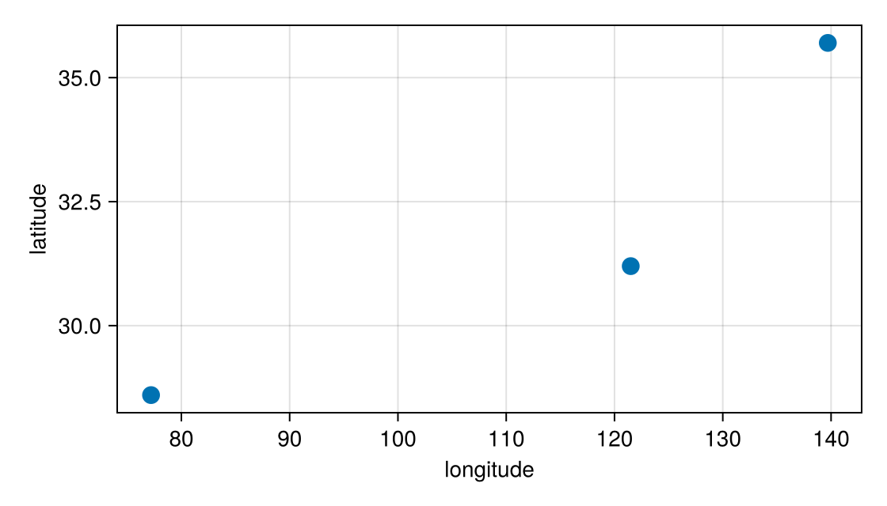

Use selections in other cells
Cells that use the @bind variable respond to each click, so a cell can take the selected rows of your data, plot them, or fit a model to them. Each event also works as an index into the data you plotted, as What the @bind value holds introduces.
Index your data with a selection
A selected point's event indexes the vectors you plotted it from, and, once DataFrames is loaded, a DataFrame with one row per point:
pick = sel.scatter
isnothing(pick) ? "click a point" : ys[pick]ys[pick] is the y of the clicked point, and df[pick, :] is its row, because pick.index is the point's position in the data you plotted. With select = :many or a box, the field holds a vector of events, and it indexes the same way:
| The field holds | Index your data with | Gives |
|---|---|---|
One ElementEvent | xs[pick], df[pick, :], df[pick, :name] | that point's value or row |
A Vector{ElementEvent} | xs[picks], df[picks, :] | the selected points |
A linked group's row | df[row, :] | that row; with key, the value is the key instead |
| A heatmap or image event | A[pick], A[sel], A[win] | see Heatmaps and images |
A LegendEvent or a BoundsEvent does not point at one row, so indexing a vector with it raises an ArgumentError. Use its fields instead, such as pick.label to choose a series, or box.xmin to filter by position.
Show something before the first click
A field holds nothing until the reader clicks, and a vector field starts empty. Check for that before you index, so the cell shows a message or an empty table until the reader selects something:
isempty(picks) ? df[1:0, :] : df[picks, :]df[1:0, :] is a table with the same columns and no rows.
Update another plot from a click
Give each payload a key that identifies its row, such as an id or a name, and use the key in other cells. Here, clicking a city on a map plots that city's series:
Notebook as text
begin
cities = [
(id = "tok", name = "Tokyo", lon = 139.7, lat = 35.7),
(id = "del", name = "Delhi", lon = 77.2, lat = 28.6),
(id = "sha", name = "Shanghai", lon = 121.5, lat = 31.2),
]
series = Dict(
"tok" => [3.1, 3.4, 3.2, 3.6],
"del" => [2.2, 2.5, 2.9, 3.0],
"sha" => [2.0, 2.4, 2.3, 2.7],
)
fig = Figure(size = (560, 320))
ax = Axis(fig[1, 1]; xlabel = "longitude", ylabel = "latitude")
s = scatter!(ax, [139.7, 77.2, 121.5], [35.7, 28.6, 31.2]; markersize = 16)
pts = interactables(s; payloads = cities)
nothing
end@bind pick masque(fig, pts; bind = s)
bind = s (Choose the fields with bind) makes pick the clicked city itself, or nothing before the first click.
Notebook as text
begin
detail = Figure(size = (560, 240))
dax = Axis(detail[1, 1]; title = isnothing(pick) ? "click a city" : pick.name)
isnothing(pick) || lines!(dax, series[pick.id])
detail
endThe detail cell uses pick, so it responds to each click but not to hovering. The same pick.id could filter a DataFrame or choose the data for a fit. The detail figure can be a Masque widget too.
To mark the clicked point in another plot of the same rows, put both plots in one figure and link them, as Linked views shows.
Filter a table with a box
Drag a box over points to select every point inside it. When you release an ROIInteractable with selects, the field of the plot it selects from holds the points inside, so df[picks, :] is the rows inside the box. Select the points inside a box sets up the box.
Where to go next
Build a widget puts several selections and controls in one value, and Linked views selects the same rows on several panels.